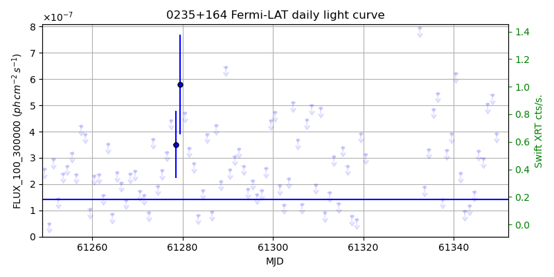
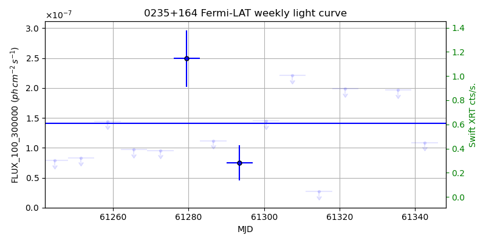
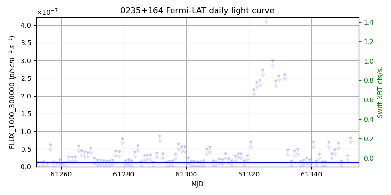
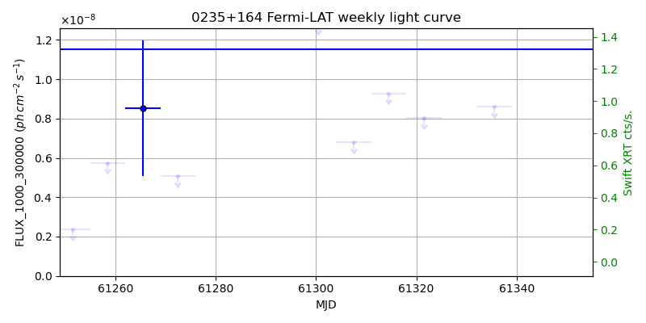

LAT Lightcurve site: https://fermi.gsfc.nasa.gov/ssc/data/access/lat/msl_lc/source/0235p164
Swift site: https://www.swift.psu.edu/monitoring/source.php?source=PKS0235+164
NED: Query
Time of last update of this page: UT: 2026-11-13 16:13 (MJD: 61357.676)
| Property | Value |
|---|---|
| R.A. | 2:38:38.88 |
| Dec. | 16:36:57.6 |
| z | 0.940 |
| 3FGL SpectrumType | LogParabola |
| 3FGL PL Index | |
| 3FGL Flux_100_300000 | 1.41e-07 1 / (s cm2) |
| 3FGL Flux_1000_300000 | 1.15e-08 1 / (s cm2) |
| 3FGL Flux >200 GeV | 1.16e-11 1 / (s cm2) |
| 3FGL Extrap. Crab >200 GeV | 0.05 |
| 3FGL Flux After EBL Absorption >200GeV | 2.41e-13 1 / (s cm2) |
| 3FGL EBL Crab Fraction >200GeV | 0.00 |

| MJD | dMJD | Flux | dFlux | Frac3FGL | FracCrab>200GeV | EBLFracCrab>200GeV |
|---|---|---|---|---|---|---|
| 61348.50 | 0.50 | 5.39e-07 | 0.00e+00 | 0.00 | 0.00 | 0.00 |
| 61349.50 | 0.50 | 3.93e-07 | 0.00e+00 | 0.00 | 0.00 | 0.00 |
| 61350.50 | 0.50 | 3.51e-07 | 0.00e+00 | 0.00 | 0.00 | 0.00 |
| 61351.50 | 0.50 | 4.01e-07 | 0.00e+00 | 0.00 | 0.00 | 0.00 |
| 61352.50 | 0.50 | 2.84e-07 | 0.00e+00 | 0.00 | 0.00 | 0.00 |

| MJD | dMJD | Flux | dFlux | Frac3FGL | FracCrab>200GeV | EBLFracCrab>200GeV |
|---|---|---|---|---|---|---|
| 61321.50 | 3.50 | 1.99e-07 | 0.00e+00 | 0.00 | 0.00 | 0.00 |
| 61328.50 | 3.50 | 2.42e-06 | 0.00e+00 | 0.00 | 0.00 | 0.00 |
| 61335.50 | 3.50 | 1.96e-07 | 0.00e+00 | 0.00 | 0.00 | 0.00 |
| 61342.50 | 3.50 | 1.09e-07 | 0.00e+00 | 0.00 | 0.00 | 0.00 |
| 61349.50 | 3.50 | 1.68e-07 | 4.98e-08 | 1.20 | 0.06 | 0.00 |

| MJD | dMJD | Flux | dFlux | Frac3FGL | FracCrab>200GeV | EBLFracCrab>200GeV |
|---|---|---|---|---|---|---|
| 61348.50 | 0.50 | 6.68e-08 | 0.00e+00 | 0.00 | 0.00 | 0.00 |
| 61349.50 | 0.50 | 1.65e-08 | 0.00e+00 | 0.00 | 0.00 | 0.00 |
| 61350.50 | 0.50 | -1.00e+00 | 0.00e+00 | 0.00 | 0.00 | 0.00 |
| 61351.50 | 0.50 | 3.22e-08 | 0.00e+00 | 0.00 | 0.00 | 0.00 |
| 61352.50 | 0.50 | 8.30e-08 | 0.00e+00 | 0.00 | 0.00 | 0.00 |

| MJD | dMJD | Flux | dFlux | Frac3FGL | FracCrab>200GeV | EBLFracCrab>200GeV |
|---|---|---|---|---|---|---|
| 61321.50 | 3.50 | 8.04e-09 | 0.00e+00 | 0.00 | 0.00 | 0.00 |
| 61328.50 | 3.50 | 1.47e-07 | 0.00e+00 | 0.00 | 0.00 | 0.00 |
| 61335.50 | 3.50 | 8.59e-09 | 0.00e+00 | 0.00 | 0.00 | 0.00 |
| 61342.50 | 3.50 | 1.39e-08 | 0.00e+00 | 0.00 | 0.00 | 0.00 |
| 61349.50 | 3.50 | 2.03e-08 | 0.00e+00 | 0.00 | 0.00 | 0.00 |
--------------------------------------------------------- Using user-supplied coords: 2:38:38.88 16:36:57.6 2000 --------------------------------------------------------- FLWO UT night of: 2026-11-14 Local Sid. @ Midnight: 03:09 Sunset (-15.0) (local, UT): 18:35 01:35 Sunrise (-15.0) (local, UT): 05:42 12:42 Moonrise (local, UT): Moonset (local, UT): 20:50 03:50 Moon phase: 0.22 --------------------------------------------------------- AzTime LSID UT Obj_el Obj_az Mn_el Mn_az Sep. --------------------------------------------------------- 18:35 21:44 01:35 22.1 83.4 20.1 218.2 119.1 19:05 22:14 02:05 28.5 87.1 16.0 223.7 118.9 19:35 22:44 02:35 34.8 91.0 11.6 228.6 118.7 20:05 23:14 03:05 41.2 95.2 6.9 233.2 118.5 20:35 23:44 03:35 47.6 100.0 2.0 237.3 118.3 21:05 00:14 04:05 53.8 105.7 -2.2 241.2 118.1 21:35 00:44 04:35 59.8 112.9 -9.0 244.8 117.8 22:05 01:14 05:05 65.5 122.6 -14.6 248.2 117.6 22:35 01:44 05:35 70.5 136.6 -20.4 251.4 117.3 23:05 02:14 06:05 74.0 157.4 -26.2 254.5 117.1 23:35 02:44 06:35 75.0 184.3 -32.1 257.5 116.8 00:05 03:14 07:05 73.1 209.9 -38.1 260.6 116.5 00:35 03:45 07:35 69.0 228.3 -44.2 263.8 116.2 01:05 04:15 08:05 63.8 240.8 -50.2 267.1 115.9 01:35 04:45 08:35 58.0 249.6 -56.3 270.9 115.6 02:05 05:15 09:05 51.9 256.2 -62.4 275.3 115.2 02:35 05:45 09:35 45.6 261.6 -68.4 281.1 114.9 03:05 06:15 10:05 39.2 266.2 -74.2 289.9 114.6 03:35 06:45 10:35 32.9 270.3 -79.6 306.2 114.2 04:05 07:15 11:05 26.5 274.1 -83.2 343.5 113.9 04:35 07:45 11:35 20.1 277.7 -82.1 35.1 113.5 05:05 08:15 12:05 13.8 281.4 -77.4 61.2 113.2 05:35 08:45 12:35 7.6 285.1 -71.8 73.4 112.9 05:42 08:52 12:42 6.3 285.9 -70.5 75.2 112.8 --------------------------------------------------------- Dark hours >55 deg.: 4.65 srcstart (UT): 2026-11-14 04:10 srcend (UT): 2026-11-14 08:49